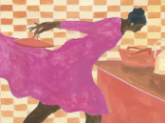

The
New Yorker
Under Review
How a British Socialist Rewrote the World for Children
E. Nesbit used her grief, her politics, and her imagination to make a new kind of book for kids.
By Jessica Winter
A Reporter at Large
Did a Nobel Peace Laureate Stoke a Civil War?
After Ethiopia’s Prime Minister ended a decades-long border conflict, he was heralded as a unifier. Now critics accuse him of tearing the country apart.
By Jon Lee Anderson
Personal History
THE WAY TO RECOVER FROM A HAPPY CHILDHOOD
Like many children, I didn’t really understand what my parents were like. But I collected clues.
By Rivka Galchen
Books
The Troublesome Legacy of the Early Romantics
Express yourself! That credo was forged by a group of brilliant, oversexed German visionaries in the eighteenth century. But did they think it through?
By Nikhil Krishnan
News & Culture
Our Columnists
A Fine Economic Mess in the United Kingdom
By John Cassidy
Q. & A.
How Giorgia Meloni Took Control in the Italian Election
By Isaac Chotiner
Backstage
The Not-Paparazzo That Celebrities Actually Enjoy Seeing
By Michael Schulman
Afterword
A Tap-Dancing TV Chef
By Susan Orlean
THE NEW YORKER INTERVIEW
Lorraine O’Grady Has Always Been a Rebel
By Doreen St. Félix
Puzzles & Games
Name Drop
A quiz that tests your knowledge of notable people, published every weekday.
The Crossword
A puzzle that ranges from lightly to considerably challenging, published every weekday.
The Crptic Password
A weekly puzzle for lovers of wily wordplay.
Caption Contest
We provide a cartoon, you provide a caption.
Spotlight
Daily Comment
Hurricane Ian is a storm that we know would occur
Too much climate energy, too little climate action.
By Bill McKibben
THE CURRENT CINEMA
CATE BLANCHETT IS IMPERIOUS AND INCANDESCENT IN “TÁR”
Todd Field’s tale of a famous conductor under fire richly portrays the music world, but its true subject is power
By Anthony Lane
CULTURE DESK
MAIRA KALMAN FINDS TRUTH IN THE MESS
The artist’s new book and exhibit, “Women Holding Things,” explore all that women carry.
Art by Maira Kalman
Text by Françoise Mouly and Genevieve Bormes
LETTER FROM THE SOUTH
THE MYSTERY OF THE HEADLESS GOATS IN THE CHATTAHOOCHEE
Hundreds of decapitated goat carcasses have turned up in the river that runs through metro Atlanta.
By Charles Bethea
TABLES FOR TWO
REJOICING IN THE RETURN OF GREAT N.Y. NOODLETOWN
The beloved Chinatown Cantonese restaurant has reopened. The roast duck, soft-shell crab, and ginger-scallion noodles taste better than ever.
By Hannah Goldfield
CULTURE DESK
OTHMAR SCHOECK’S GHOSTLY SONGS
Revisiting the chaotic Swiss composer who impressed James Joyce and caused Penn to meet Teller.
By Alex Ross
THE FRONT ROW
“TRIANGLE OF SADNESS”: WE’RE ON A YACHT AND WE’RE PUKING
Ruben Östlund’s class satire, starring Charlbi Dean and Harris Dickinson, strains to look more audacious than it is.
By Richard Brody
DAILY COMMENT
THE SUPREME COURT CONSIDERS WHAT MAY BE THE FINAL BLOW TO THE VOTING RIGHTS ACT
Justices Kagan, Jackson, and Sotomayor warn of what’s really at stake in Merrill v. Milligan.